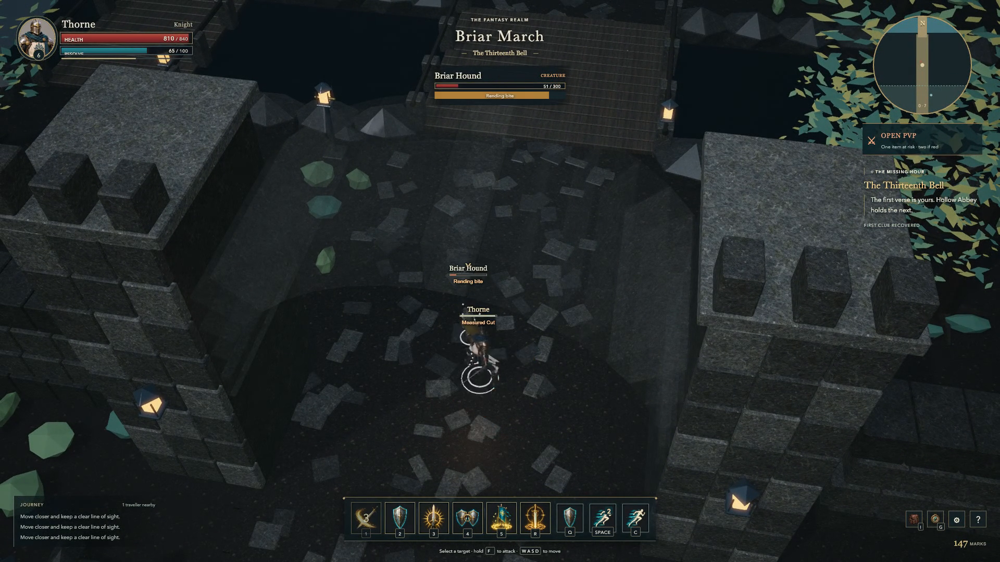
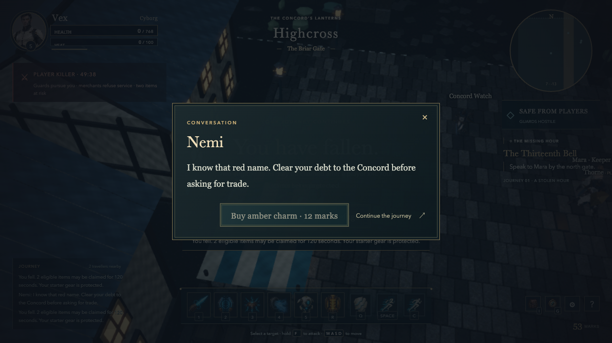
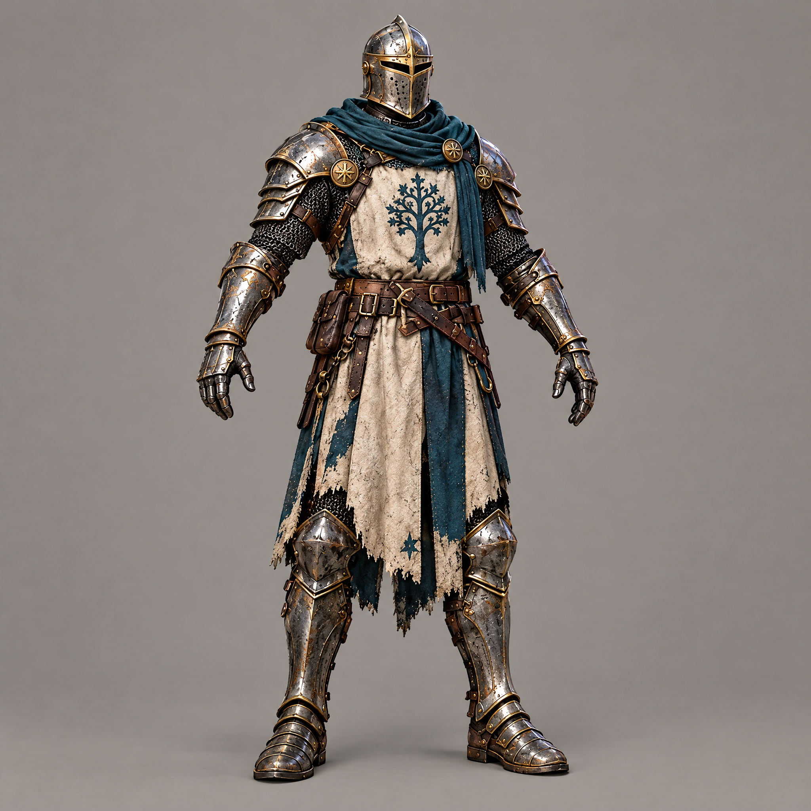

The first road is playable.
A real journey through the Briar Gate: generated characters, live combat, two-player loot and the first recorded browser expedition.
Local playable build · visual acceptance still openTHREEFOLD now runs as a local multiplayer browser game. A Knight or Cyborg can walk out of Highcross, speak to Mara, fight Briar Hounds, read a ruined epitaph and bring its clue home. The footage below comes from the running game, with its actual HUD and synthesized audio. It is a production checkpoint, and its environment still falls short of the original visual target.






The asset pipeline is real now. Thirteen Higgsfield reference jobs informed five Meshy bodies, while Blender supplied the environment, equipment, cleanup and a custom eighteen-bone quadruped rig. Six packaged models pass glTF validation with no errors. Editable Blender sources, prompts, recovery IDs and rejected production evidence are retained. Thirteen catalogue entries have prototype outputs; the full catalogue still tracks 2,194 required units.
The first motion and camera reviews found problems worth keeping in the record: stretched hound weights, poor equipment clearance, a camera that changed its orbit during travel, an obstructing gate and forest canopies. These received specific repairs and another browser inspection. They are reasons for testing a small representative scene before ordering hundreds of assets.
Two independent browser sessions exercised the PvP rules. Town attacks were refused. Outside town, aggression marked the Cyborg red; guards pursued him and Nemi refused trade. A clean victim exposed one item. When the red player died, the lawful attacker claimed two different items, both clients received receipts, and the shared allowance reached zero. Dying retained the outlaw timer and respawn led to an unpatrolled refuge.
Thirty automated checks cover the local rules and real WebSocket transport, including replayed claims, reconnect ownership, capacity and identity races. The sixteen-client server load ran for ten minutes: tick p95 was 10.32ms and p99 13.13ms. That workload uses eighty AI-cost fixtures, including thirty-two summon proxies. It is separate from the browser rendering crowd and is not a complete networked raid.
The first ten-minute renderer trace recorded a median 116.10fps, uncapped frame p95 9.70ms and p99 10.40ms on an Apple M5 at 1920×1080. Its longest frame was 358.10ms, so that stall is retained rather than hidden by the average. The crowd is synthetic, and lower-end hardware remains unqualified. All twelve full guilds remain required; the current Knight and Cyborg are practice kits, and the Elemental silhouettes are only a material study. The separate 48-hour build has not started.
The thirty-minute load/unload baseline retained exactly the same mesh, texture, material and rig counts across fifteen unloaded phases. Its JavaScript heap still ranged from 330.04 to 517.33MiB, exceeding the 300MiB target. That budget miss remains visible in the report; stable object counts alone are not a memory-budget pass.
Recorded consumption: 194 Meshy credits across seventeen completed tasks. Higgsfield returned estimates totaling 35.75 credits for thirteen references; actual billing was not independently verified. A failed oversized rig request returned no task ID, so its charge remains unknown. No currency total is invented.